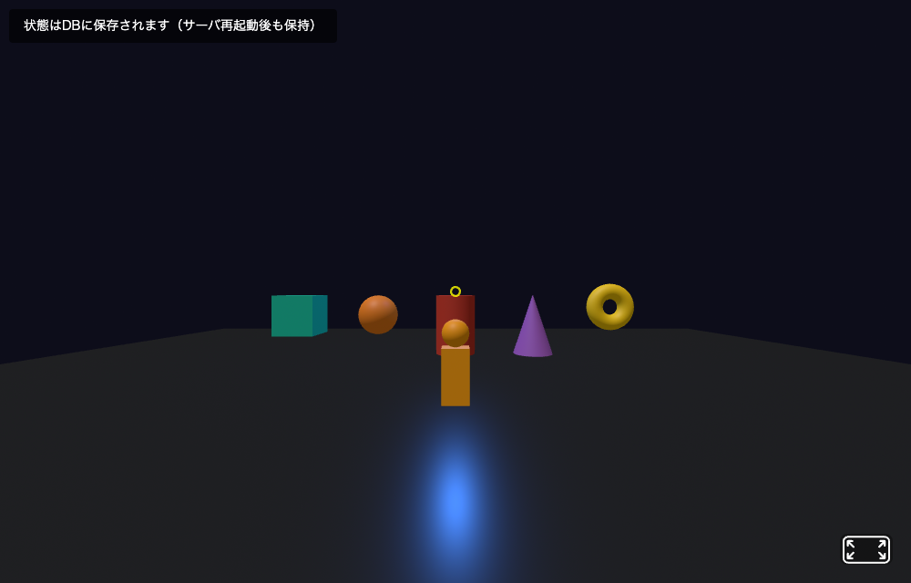
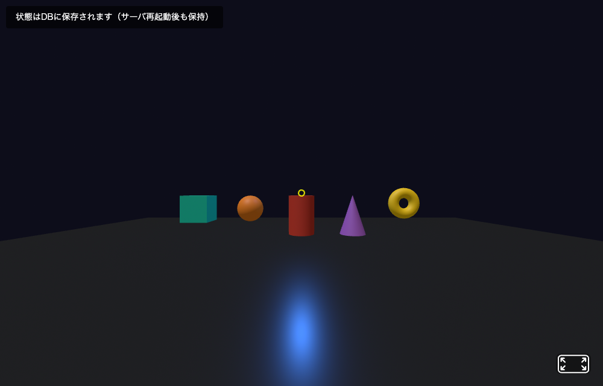

データベース（SQLite）によるデータの永続化
前回はアバタのposition・rotation・idなどのデータをJSON形式で整理し、Socket.IOで送受信する方法を学びました。
しかし、サーバを再起動するとすべてのデータが消えてしまう問題があります。今回はデータベース（SQLite）を導入し、そのJSONデータを永続化する方法を学びます。
これまでのチャットアプリやアバター同期では、サーバのメモリ（変数）にデータを保持していました。
| 保存方法 | 特徴 | サーバ再起動時 |
|---|---|---|
| メモリ（変数） | 高速だがプロセス終了で消える | すべてのデータが消失 |
| データベース | ファイルに永続保存される | データが残る |
具体的な問題:
データベースを使えば、これらの問題をすべて解決できます。
読み方:
SQL = エスキューエル（または「シークエル」、Structured Query Language の略）。
SQLite = エスキューライト（"SQL" ＋ "lite"（軽い）。発音は「シークライト」とも）。
better-sqlite3 = ベター・エスキューライト・スリー（Node.js 用パッケージ名）。
INSERT = インサート、SELECT = セレクト、UPDATE = アップデート、CREATE TABLE = クリエイト・テーブル、AUTOINCREMENT = オート・インクリメント（自動加算）、PRIMARY KEY = プライマリ・キー（主キー）。
SQLite は、ファイルベースの軽量なリレーショナルデータベースです。
| 特徴 | 説明 |
|---|---|
| サーバ不要 | 別途データベースサーバを起動する必要がない（組み込み型） |
| ファイルベース | データベース全体が1つのファイル（例: chat.db）に保存される |
| 軽量 | インストールが簡単で、小〜中規模のアプリに最適 |
| SQL対応 | 標準的なSQL文でデータを操作できる |
SQLite vs MySQL / PostgreSQL
MySQL や PostgreSQL は大規模なサービス向けですが、この授業で作る規模のアプリなら SQLite で十分です。設定もインストールも簡単で、学習コストが低いのが利点です。
Node.js から SQLite を操作するには better-sqlite3 というパッケージを使います。
Terminal
npm install better-sqlite3
基本的な使い方:
JavaScript // better-sqlite3 を読み込む const Database = require('better-sqlite3'); // データベースファイルを開く（なければ自動作成） const db = new Database('myapp.db');
これだけで myapp.db というファイルが作成され、データベースとして使えるようになります。
用語
| 永続化（Persistence） | プロセスが終了してもデータを失わないようにファイルやデータベースに保存すること。 |
| SQLite | サーバプロセス不要で動作する軽量なリレーショナルデータベース。データベース全体が1つのファイルに格納される。 |
| better-sqlite3 | Node.js から SQLite を同期的に操作するためのパッケージ。非同期 API より扱いやすい。 |
| プリペアドステートメント | SQL文のテンプレートを事前にコンパイルし、パラメータだけを差し替えて実行する方式。SQLインジェクション対策として有効。 |
SQL（Structured Query Language）は、データベースを操作するための言語です。以下の4つが基本です。
| SQL文 | 意味 | 例 |
|---|---|---|
| CREATE TABLE | テーブル（表）を作成する | CREATE TABLE messages (id INTEGER PRIMARY KEY, text TEXT) |
| INSERT INTO | データを追加する | INSERT INTO messages (text) VALUES ('こんにちは') |
| SELECT | データを取得する | SELECT * FROM messages |
| UPDATE | データを更新する | UPDATE messages SET text = '修正' WHERE id = 1 |
テーブルとは
テーブルはExcelのシートのようなものです。列（カラム）がデータの種類、行（レコード）が個々のデータを表します。
| id | name | text | created_at |
|---|---|---|---|
| 1 | 太郎 | こんにちは | 2026-07-15 16:30:00 |
| 2 | 花子 | やあ！ | 2026-07-15 16:30:15 |
| 3 | 太郎 | 元気？ | 2026-07-15 16:30:30 |
better-sqlite3 での書き方:
JavaScript // テーブルを作成 db.exec(` CREATE TABLE IF NOT EXISTS messages ( id INTEGER PRIMARY KEY AUTOINCREMENT, name TEXT NOT NULL, text TEXT NOT NULL, created_at TEXT DEFAULT (datetime('now', 'localtime')) ) `); // データを追加（プリペアドステートメント） const insert = db.prepare('INSERT INTO messages (name, text) VALUES (?, ?)'); insert.run('太郎', 'こんにちは'); // データを全件取得 const rows = db.prepare('SELECT * FROM messages').all(); console.log(rows); // → [{ id: 1, name: '太郎', text: 'こんにちは', created_at: '2026-07-15 16:30:00' }]
やってみよう（1分）
上のコードで insert.run を2回実行した後、SELECT * FROM messages は何件返すか予測してみよう。AUTOINCREMENT の id 値はどうなるか。
プリペアドステートメントとは？
? をプレースホルダとして使い、後から値を渡す方法です。SQL文に直接値を埋め込むよりも安全（SQLインジェクション対策）で高速です。
3D空間内のオブジェクト（位置、色など）をデータベースに保存すれば、サーバを再起動しても状態が維持されます。
JavaScript // オブジェクト状態テーブル db.exec(` CREATE TABLE IF NOT EXISTS objects ( obj_id TEXT PRIMARY KEY, x REAL DEFAULT 0, y REAL DEFAULT 0, z REAL DEFAULT 0, color TEXT DEFAULT '#FFFFFF' ) `); // オブジェクトの位置を保存（なければ追加、あれば更新） const upsert = db.prepare(` INSERT INTO objects (obj_id, x, y, z, color) VALUES (?, ?, ?, ?, ?) ON CONFLICT(obj_id) DO UPDATE SET x=?, y=?, z=?, color=? `); function saveObject(id, x, y, z, color) { upsert.run(id, x, y, z, color, x, y, z, color); }
チャットメッセージをデータベースに保存すれば、サーバ再起動後もメッセージが残り、新規接続ユーザにも過去のメッセージを表示できます。
INSERT INTO でデータベースに保存SELECT で過去メッセージを取得して送信ORDER BY ... LIMIT で最新N件だけ取得具体例: 16時30分から16時40分のチャットルームの流れ
| 時刻 | イベント | messages テーブル |
|---|---|---|
| 16:30 | 太郎が「こんにちは」を送信 | 1行（太郎/こんにちは） |
| 16:31 | 花子が「やあ！」を送信 | 2行 |
| 16:32 | サーバが Ctrl+C で停止 | 2行のまま（ファイルに残る） |
| 16:35 | サーバを再起動 | 2行（消えていない） |
| 16:36 | 花子のブラウザがリロード | SELECT で 2行取得 → 画面に「過去のメッセージ」として表示 |
| 16:40 | 次郎が初参加で接続 | SELECT で 2行取得 → 次郎の画面にも過去2件が表示される |
メモリだけに保存していた前回までと違い、サーバ停止 → 再起動 や 新規参加者の途中合流 でも、全員が同じ履歴を見られるのが永続化の威力です。
Q&A よくある質問
| 質問 | 答え |
|---|---|
Q1. chat.db はどこに作られる？ |
node server.js を実行したカレントディレクトリ（プロジェクトフォルダ直下）に作られる。VS Code の左ペインで確認できる。 |
Q2. chat.db を消すとどうなる？ |
履歴がすべて消える。次回起動時に CREATE TABLE IF NOT EXISTS が再実行され、空のテーブルから始まる。 |
| Q3. メモリだけではダメな場面は？ | サーバを再起動する／クラッシュする／別のマシンに移す ── これらすべてでデータが消える。長期保存したい情報は必ず DB へ。 |
| Q4. 10000件たまったら遅くなる？ | そのまま SELECT * すると遅い。ORDER BY id DESC LIMIT 50 で最新N件だけを取れば軽い。 さらに大きくなる場合はインデックスや古い行の削除を検討。 |
Q5. ? プレースホルダを使わず ' ＋ 値 ＋ ' で組み立てたら？ |
SQLインジェクション攻撃の入口になる。ユーザが '); DROP TABLE messages;-- を送ると、テーブルごと消える可能性がある。必ず prepare(...) ＋ run(値) を使う。 |
新しいユーザが接続したとき、データベースからデータを読み込んで送信します。
JavaScript io.on('connection', (socket) => { // 1. 保存済みのオブジェクト状態を送信 const objects = db.prepare('SELECT * FROM objects').all(); socket.emit('init-objects', objects); // 2. 過去のチャット履歴（最新50件）を送信 const messages = db.prepare( 'SELECT * FROM messages ORDER BY id DESC LIMIT 50' ).all().reverse(); socket.emit('chat-history', messages); });
これにより、途中から参加したユーザも過去の状態を確認できるようになります。
この回の主役はデータの永続化（DB保存）です。下は実機での検証：① オブジェクトの色を変更（better-sqlite3 で app.db に保存）→ ② サーバを再起動して別ブラウザで再接続 → 同じ色がそのまま復元されました。これが第11回（メモリ保持）との決定的な違いです。

UPDATE objects SET color... で app.db に保存される。
SELECT * FROM objects で読み込み、色が完全に復元されている。※ solutions/week13 を実際に起動し、色変更 → サーバ再起動 → 再接続の順で画面をキャプチャしたものです。app.db の中身も obj-1=#1ABC9C … と保存されていることを確認済み。
以下のSQL文を順に実行したとき、テーブルの状態がどう変わるかを確認しましょう。
SQL -- 1. テーブルを作成 CREATE TABLE items ( id INTEGER PRIMARY KEY AUTOINCREMENT, name TEXT NOT NULL, color TEXT DEFAULT 'white' ); -- 2. データを3件追加 INSERT INTO items (name, color) VALUES ('box1', 'red'); INSERT INTO items (name, color) VALUES ('sphere1', 'blue'); INSERT INTO items (name, color) VALUES ('cylinder1', 'green'); -- 3. 全件取得 SELECT * FROM items; -- 4. box1 の色を yellow に更新 UPDATE items SET color = 'yellow' WHERE name = 'box1';
| 手順 | 操作 | テーブルの状態 |
|---|---|---|
| 1 | CREATE TABLE | 空のテーブルが作成される（id, name, color の3列） |
| 2 | INSERT x 3 | 3行のデータが追加される |
| 3 | SELECT * | 3行すべてが返る: (1,'box1','red'), (2,'sphere1','blue'), (3,'cylinder1','green') |
| 4 | UPDATE | id=1 の color が 'red' → 'yellow' に変わる |
問題: 以下のSQL文を順に実行したとき、最後の SELECT の結果を予測しなさい。
SQL CREATE TABLE users ( id INTEGER PRIMARY KEY AUTOINCREMENT, name TEXT NOT NULL, score INTEGER DEFAULT 0 ); INSERT INTO users (name, score) VALUES ('Alice', 10); INSERT INTO users (name, score) VALUES ('Bob', 25); INSERT INTO users (name) VALUES ('Charlie'); UPDATE users SET score = 30 WHERE name = 'Alice'; SELECT * FROM users;
| id | name | score |
|---|---|---|
以下のコードをコピーして実行し、結果を観察してください。
S:\Web_Prog\Web13 フォルダを作成し、VS Code で開いてください。
npm init -y を実行npm install better-sqlite3 を実行db-test.js を作成し、下のコードを貼り付けJavaScript ── db-test.js const Database = require('better-sqlite3'); const db = new Database('test.db'); // テーブルを作成（存在しない場合のみ） db.exec(` CREATE TABLE IF NOT EXISTS fruits ( id INTEGER PRIMARY KEY AUTOINCREMENT, name TEXT NOT NULL, color TEXT NOT NULL, price INTEGER DEFAULT 0 ) `); console.log('=== テーブル作成完了 ==='); // データを追加 const insert = db.prepare( 'INSERT INTO fruits (name, color, price) VALUES (?, ?, ?)' ); insert.run('りんご', '赤', 150); insert.run('バナナ', '黄', 100); insert.run('ぶどう', '紫', 300); console.log('=== 3件追加完了 ==='); // 全件取得して表示 const allFruits = db.prepare('SELECT * FROM fruits').all(); console.log('全件:', allFruits); // 条件付き取得（価格が150以上） const expensive = db.prepare( 'SELECT * FROM fruits WHERE price >= ?' ).all(150); console.log('150円以上:', expensive); // データを更新 db.prepare('UPDATE fruits SET price = ? WHERE name = ?').run(200, 'バナナ'); // 更新後の全件を表示 const updated = db.prepare('SELECT * FROM fruits').all(); console.log('更新後:', updated); db.close(); console.log('=== 完了 ===');
実行手順:
node db-test.js を実行node db-test.js を実行し、データがどうなるか観察するWeb13 フォルダに test.db というファイルが作られていることを確認してくださいやってみよう（2分）
test.db ファイルを削除してからもう一度 node db-test.js を実行してみよう。削除しない場合とデータ件数がどう変わるか比較してみよう。
3〜4人のグループを組んで、以下の2フェーズで進めてください。
今回のコード体験で動かしたプログラムをもとに、「データベースに関する質問を1つ」考えてください。
以下の質問例を参考に、自分なりの質問を考えましょう。そのまま使ってもOKです。
質問の切り口（参考）
| テーマ | 質問例 |
|---|---|
| メモリ vs データベース | 「サーバの変数に保存するのとDBに保存するのでは、何が違う？」 |
| SQLの基本 | 「SELECT * FROM messages の * は何を意味する？」 |
| 永続化の意味 | 「chat.db ファイルを削除するとどうなる？」 |
| 新規接続時 | 「途中から参加した人に過去のメッセージを見せるには？」 |
| テーブル設計 | 「もしユーザのプロフィール画像も保存したい場合、テーブルはどう変える？」 |
| AUTOINCREMENT | 「id が AUTOINCREMENT だと何が便利？」 |
1人ずつ順番に自分の質問をメンバーに出し、回答を聞いて記録してください。
| 役割 | やること |
|---|---|
| 出題者 | 自分で考えた質問を口頭で出す |
| 回答者 | コードやノートを見ずに口頭で回答する |
| 記録者 | 回答の要点と評価を記録する |
セクション1の内容をもとに、以下の問いに答えなさい。
問1. 以下の表の空欄を埋めなさい。
| SQL文 | 意味（空欄を埋める） | 使う場面（空欄を埋める） |
|---|---|---|
| CREATE TABLE | ||
| INSERT INTO | ||
| SELECT | ||
| UPDATE |
問2. サーバのメモリ（変数）にデータを保存する場合と、データベースに保存する場合の違いを、以下の観点から説明しなさい。
| 観点 | メモリ（変数） | データベース |
|---|---|---|
| サーバ再起動時 | ||
| アクセス速度 | ||
| データ量の限界 |
これまでの回で作成したチャットアプリ（server.js）に、このコード体験で学んだSQLiteでのデータ保存を組み込み、以下の指示どおりに改造しなさい。
改造指示（すべて実行すること）
| # | 指示 |
|---|---|
| 1 | messages テーブルに room TEXT DEFAULT 'general' という列を追加する（CREATE TABLE を変更） |
| 2 | INSERT 文で room の値も保存するように変更する（固定値 'general' でOK） |
| 3 | チャット履歴の取得（SELECT文）で最新 100件 を取得するように変更する |
| 4 | サーバ起動時にコンソールに 「現在のメッセージ数: XX件」 と表示する（SELECT COUNT(*) を使う） |
ヒント: db.prepare('SELECT COUNT(*) as count FROM messages').get().count でメッセージ数を取得できます。
server.js のコード全体を貼り付けるWeb13 フォルダに以下のファイルを追加で作成し、3Dオブジェクトの状態（位置・色）をデータベースに保存するアプリを作ってください。
必須要件
提出要件（2点セット）
| 提出物 | 内容 |
|---|---|
| 1. コード | サーバ側（server.js）とクライアント側（index.html または scene.html）のコード全体をNotionノートに貼り付ける |
| 2. 音声説明 | 以下の内容を1〜2分の音声で録音し、Notionノートに添付する スマホの録音アプリやPCの機能で録音 → Notionに /audio で添付 |
音声で説明すること:
評価チェックリスト:
| # | チェック項目 |
|---|---|
| 1 | A-Frame で3Dオブジェクトが表示される |
| 2 | クリックで色が変わる |
| 3 | 色の変更がデータベースに保存される |
| 4 | ページリロードで色が復元される |
| 5 | 複数ブラウザで色が同期される |
| 6 | 音声で仕組みを説明している |
各セクションを埋めていってください。これが提出するPDFの元になります。
Notion テンプレート
# Webプログラミング演習 第13回
名前:
学籍番号:
---
## 説明 1.4: やってみよう（insert.run を2回実行した場合）
### 予測した件数
（SELECT * FROM messages は何件返るか）
### 予測した各行の id 値
- 1行目 id:
- 2行目 id:
- 3行目 id:
- 4行目 id:
---
## トレース演習 1: SQL文の実行結果を予測する
| id | name | score |
|----|------|-------|
| | | |
| | | |
| | | |
（Charlie の score に注目して記入）
---
## コード体験 1: データベースの基本操作（db-test.js）
### Q1. 1回目の実行で表示されたデータ
- 全件:
- 150円以上:
- 更新後:
### Q2. 2回目の実行でデータはどうなったか（件数と理由）
### Q3. Web13 フォルダに test.db ファイルが作られていたか
- 確認結果:
### やってみよう（test.db を削除した場合 vs 削除しない場合）
- 削除した場合の件数:
- 削除しなかった場合の件数:
- 違いの理由:
---
## グループ口頭試問
### Phase 1: あなたが考えた質問
### Phase 2: グループメンバー（氏名）:
### 口頭試問の記録
| ラウンド | 出題者 | 回答者 | 質問（概要） | 回答の要点 | 評価 |
|---------|--------|--------|-------------|-----------|------|
| 1 | | | | | A/B/C |
| 2 | | | | | A/B/C |
| 3 | | | | | A/B/C |
---
## 標準課題 1: データベースとSQLの基礎知識
### 問1. SQL文の意味と使う場面
| SQL文 | 意味 | 使う場面 |
|-------|------|---------|
| CREATE TABLE | | |
| INSERT INTO | | |
| SELECT | | |
| UPDATE | | |
### 問2. メモリ vs データベース
| 観点 | メモリ（変数） | データベース |
|------|---------------|-------------|
| サーバ再起動時 | | |
| アクセス速度 | | |
| データ量の限界 | | |
---
## 標準課題 2: チャットアプリを改造する
### ① 改造後の server.js コード全体
```javascript
（ここに改造後コードを貼り付け）
```
### ② 各改造について「変更した行」と「変更理由」
1. messages テーブルに room TEXT DEFAULT 'general' 列を追加:
2. INSERT 文で room の値も保存するよう変更:
3. チャット履歴の取得で最新100件を取得するよう変更:
4. サーバ起動時に「現在のメッセージ数: XX件」と表示:
---
## 発展課題: 3Dシーンにオブジェクト状態の永続化を実装する
### 1. コード
#### server.js
```javascript
（ここに貼り付け）
```
#### index.html（または scene.html）
```html
（ここに貼り付け）
```
### 2. 音声説明（1〜2分の音声ファイルを添付）
- データベースにどのようなテーブルを作成したか
- クリック時のデータの流れ（クライアント → サーバ → DB → 全クライアント）
- サーバ再起動後にデータが復元されることの確認結果
### 3. 評価チェックリスト（自己確認）
- [ ] A-Frame で3Dオブジェクトが表示される
- [ ] クリックで色が変わる
- [ ] 色の変更がデータベースに保存される
- [ ] ページリロードで色が復元される
- [ ] 複数ブラウザで色が同期される
- [ ] 音声で仕組みを説明している
最後の SELECT * FROM users の結果:
| id | name | score |
|---|---|---|
| 1 | Alice | 30 |
| 2 | Bob | 25 |
| 3 | Charlie | 0 |
SQL文を順に実行したときのテーブルの状態:
| 手順 | テーブル状態 |
|---|---|
| 1. CREATE TABLE | 空のテーブル items（id, name, color の3列）が作成される |
| 2. INSERT × 3 | id=1: (box1, red), id=2: (sphere1, blue), id=3: (cylinder1, green) |
| 3. SELECT * | 3行とも取得される。AUTOINCREMENT により id は 1, 2, 3 と自動付与される |
| 4. UPDATE | id=1（box1）の color が red から yellow に変わる。他の行は変更なし |
ポイント: WHERE 句がない UPDATE は全行が更新対象になる。今回は WHERE name = 'box1' があるため1行だけ更新される。DEFAULT 'white' は INSERT で color が省略された場合に使われる値で、今回はすべて指定したため発動しない。
insert.run('太郎', 'こんにちは') をコード例の通り実行した後、もう一度同じ insert.run('太郎', 'こんにちは') を実行した場合:
SELECT * FROM messages の結果（2件）
[
{ id: 1, name: '太郎', text: 'こんにちは', created_at: '...' },
{ id: 2, name: '太郎', text: 'こんにちは', created_at: '...' }
]
AUTOINCREMENT により 1, 2 と自動で割り振られる